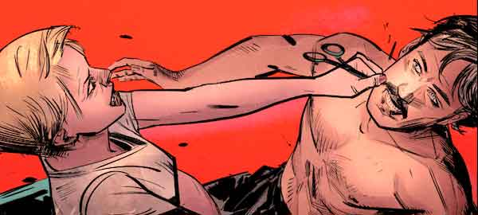

Spoiler alert:
Resulta que Jude es tan difícil de matar como Hydra. Ha estado vivo todos estos años, mirando desde las sombras.
En Invincible Iron Man nro. 600, finalmente se revela.
Anthony Edward Stark es un exitoso y
famoso multimillonario, quien fue un niño prodigio y posee una
de las mentes más brillantes del mundo.
Es también director ejecutivo de
Stark Industries y miembro fundador de
Avengers.
A la edad de 15 años ingresó al MIT para estudiar ingeniería y se graduó con una doble especialización en ingeniería eléctrica y física.
Creador de las armaduras de Iron Man, la Torre de los Vengadores y diferentes sistemas inteligentes como: J.A.R.V.I.S. y F.R.I.D.A.Y.
Si bien el UCM, trató de llevar a la pantalla grande una fiel historia de Tony Stark en comparación con los cómics, hay sucesos que son planteados de distinta forma para lograr una mejor fluidez en las películas.
Sin embargo, ambas historias, muestran la esencia del personaje:
Genio, millonario, playboy, filántropo…
Aunque la película y el cómic son muy parecidos en cuanto al origen del personaje, la diferencia se centra en el lugar donde se desarrolla el comienzo de Iron Man.
En el cómic, todo sucede en Vietnam, mientras que en la película los acontecimientos pasan en Afganistán.
Esto es porque en 1964 , cuando se crea el personaje de
Iron Man, al situar los acontecimientos
en Vietnam se hacía referencia a la Guerra Fría.
En
cambio, cuando la película se estrena en 2008, se cambia por
Afganistán, haciendo referencia al último enfrentamiento de
EE.UU en la guerra.
Los grupos terroristas también cambian. En la película, se trata del grupo terrorista ‘Los diez anillos’, liderados por Raza. Mientras que en el cómic es capturado por las fuerzas de Wong-Chu.
Aunque los secuestradores de Stark son
distintos, el motivo de su secuestro no cambia.
Es
secuestrado y llevado a una cueva para que, junto al profesor
Yinsen, crearán una copia del misil
Jericó, a cambio de la libertad de ambos.
Tanto en el cómic como en la película, Yinsen muere para que Tony tuviera suficiente tiempo para cargar la armadura y huir.
La muerte del profesor, afecta de igual manera a Tony, siendo la causa de que Stark Industries dejará de producir armas.
La primera aparición del React Arc, también es modificada, aunque su funcionamiento es casi el mismo.
En la película fue creado al mismo tiempo que la armadura Mark 1, evitando que la metrania del misil llegue al corazón de Tony y es alimentado por una batería de auto.
Mientras que en el cómic, se creó para salvar la vida de Pepper, intentando imitar el electromagneto que salvó a Tony en la cueva.
La aparición de Rhodes también es
diferente.
En la película, desde el inicio, es presentado como un
amigo de Stark y es quien lo acompaña
en la presentación de armas en Afganistán.
En los cómics es muy diferente, ya que Rhodes aparece mucho tiempo después cuando Tony es invitado por S.H.I.E.L.D. a dar una conferencia en Iron Man nro. 118. Es ahí, cuando Tony conoce a James y se hacen amigos.
En la película, Happy, es el guardaespaldas, chofer y amigo de Tony.
En los cómics es un ex-boxeador, contratado por Stark para ser su guardaespaldas, después de que le salva la vida. Cuando el electromagneto se quedo sin energia, Happy, lo lleva a un hotel para que pueda recargar la armadura.
Jarvis, en la película es una inteligencia artificial creada por Tony.
En cambio, en el cómic, es el mayordomo y amigo de Stark. Tiempo después,al morir Edwin, Tony crea una inteligencia artificial llamada J.A.R.V.I.S., en honor a su amigo.
En la película Tony es el primogénito de Howard y Maria Stark. Pero en los cómics Tony es adoptado por los Stark para ocultar la vida de su hermanastro Arno Stark.
En realidad es hijo de
Amanda Armstrong, un agente encubierto de
S.H.I.E.L.D.
y Jude un doble
agente, ya que trabaja para
S.H.I.E.L.D.
como también para Hydra.
Cuando Amanda se entera de la doble
vida de Jude lo mata, apuñalándolo en
el cuello.
Resulta que Jude es tan difícil de matar como Hydra. Ha estado vivo todos estos años, mirando desde las sombras.
En Invincible Iron Man nro. 600, finalmente se revela.
Al final de Iron Man I, se armó una coartada para que no sea revelada la identidad del superhéroe, pero... Tony no pudo con su genio y confiesa que él es Iron Man.
En los cómics, sí se mantiene la coartada planteada en la película, diciendo que es un guarda espaldas y 'mascota' de Stark Industries. Tony tarda 30 años en revelar que él es Iron Man, aunque luego borraría la memoria de las personas usando un satélite creado por su empresa.
El 1 de marzo de 1963 Iron Man hizo su debut en el nro. 39 del cómic Tales of Suspense.
El Hombre de Hierro, tuvo que esperar cinco años para ver publicado el primer número de su propio cómic, lo que ocurrió en mayo de 1968.
Stan Lee basó la personalidad de Stark en Howard Hughes, explicando:
Howard Hughes fue uno de los hombres más pintorescos de nuestro tiempo. Fue un inventor, un aventurero, un multimillonario, un donjuán y, finalmente, un chiflado.
Según el Hechicero Supremo Agamotto, siempre debe haber un Tony Stark en cada existencia, y el Fénix ha declarado que el Tony Stark de Tierra-616 es particularmente indispensable.
Tony Stark se convirtió en el primer humano en hacer uso del poderoso Guantelete del Infinito en Avengers Vol.4.
Este personaje fue co-creado por el escritor y editor Stan Lee y desarrollado por el guionista Larry Lieber, mientras que los artistas Don Heck y Jack Kirby estuvieron a cargo de su diseño.
Y si debo dar esto por terminado, dejarlo por la paz o como sea, supongo que diré, que mi armadura, nunca fue una distracción, o un pasatiempo, era una capullo, y ahora, soy un hombre nuevo. Podrán arrebatarme mi casa, todos mis trucos y juguetes, pero hay algo que no pueden quitarme... yo soy Iron Man.